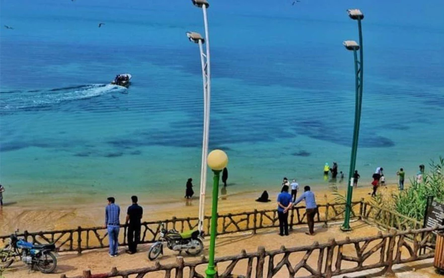

ساحل ریشهر یکی دیگر از جاهای دیدنی بوشهر و عروس ساحلهاست که از زمان عیلامیها (از سلسلههای بومی جنوب غرب فلات ایران) به جا مانده است. این ساحل در قدیم یکی از نقاط ارتباطی شرق و غرب در دنیای باستان بوده و در دوران ساسانیان به عنوان یکی از مراکز علمی و ادبی معتبر شناخته میشد. با گشتوگذار در این ساحل میتوانید از بناهای تاریخی همچون بافت تاریخی ریشهر، پایگاه نادری و شاهکارهای معماری ایلامیان و ساسانیان نیز بازدید کنید. اطراف ساحل ریشهر به امکانات و تفریحات متنوعی مانند دریاچه قایقسواری، کافیشاپ، رستوران، پیست دوچرخهسواری و آلاچیق مجهز است. اگر به ساحل ریشهر رفتید، از خرید سوغات آن یعنی خرما و پنیر نخل، صنایع دستی محلی مثل حصیر و کلاه و زنبیل غافل نشوید. آدرس: بوشهر، بلوار شهدای نیروی دریایی، بلوار علمدار، خیابان ریشهر، ساحل ریشهر
